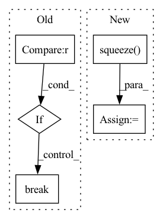

Pattern ID :28253

Before Change
torch.save(model, save)
else:
patience += 1
if early_stop and patience > 7:
break
elif task == "multilabel":
f1_micro = f1_score(true, pred, average="micro")
f1_macro = f1_score(true, pred, average="macro")
print("Epoch " + str(epoch) + " valid loss: " + str(valloss) + \
After Change
loss = criterion(out, j[-1].float().cuda())
else:
if len(j[-1].size())>1:
j[-1] = j[-1].squeeze()
loss=criterion(out, j[-1].long().cuda())
totalloss += loss * len(j[-1])
if task == "classification":
pred.append(torch.argmax(out, 1))
In pattern: SUPERPATTERN
Frequency: 3
Non-data size: 5
Instances
Fragment ID: 83413200
Project Name: pliang279/multibench
Commit Name: ad6f250adaddd084749a47bcb9bc54236badc5ea
Time: 2021-06-01
Author: ztwu_nil@zju.edu.cn
File Name: training_structures/Simple_Early_Fusion.py
M Class Name: AnonimousClass
N Class Name: AnonimousClass
M Method Name: train(16)
N Method Name: train(16)
M Parent Class:
N Parent Class:
M File Name: training_structures/Simple_Early_Fusion.py
N File Name: training_structures/Simple_Early_Fusion.py
M Start Line: 45
M End Line: 159
N Start Line: 42
N End Line: 164
'>
Before Change
// 获取当前下标的输出字符
sym = data.cn_index_dict[out[0, j].item()]
// 如果输出字符不为"EOS"终止符，则添加到当前句子的翻译结果列表
if sym != "EOS":
translation.append(sym)
// 否则终止遍历
else:
break
// 打印模型翻译输出的中文句子结果
print("translation: %s" % " ".join(translation))
After Change
// 设置attention mask
src_mask = (src != 0).unsqueeze(-2)
// 用训练好的模型进行decode预测
decode_result = greedy_decode(model, src, src_mask,
max_len=config.max_len).squeeze().tolist()
// 模型翻译结果解码
translation = sp_chn.decode_ids(decode_result)
trg.append(cn_sent[i])
'>
Fragment ID: 83413218
Project Name: hemingkx/chinesenmt
Commit Name: 9adf53cb6d9b875c9d173643a8d266d49d6f90eb
Time: 2020-12-15
Author: hemingkx@gmail.com
File Name: train.py
M Class Name: AnonimousClass
N Class Name: AnonimousClass
M Method Name: evaluate(2)
N Method Name: evaluate(2)
M Parent Class:
N Parent Class:
M File Name: train.py
N File Name: train.py
M Start Line: 53
M End Line: 84
N Start Line: 67
N End Line: 95
'>
Before Change
torch.save(model, save)
else:
patience += 1
if early_stop and patience > 7:
break
elif task == "multilabel":
f1_micro = f1_score(true, pred, average="micro")
f1_macro = f1_score(true, pred, average="macro")
print("Epoch " + str(epoch) + " valid loss: " + str(valloss) + \
After Change
loss = criterion(out, j[-1].float().cuda())
else:
if len(j[-1].size())>1:
j[-1] = j[-1].squeeze()
loss=criterion(out, j[-1].long().cuda())
totalloss += loss * len(j[-1])
if task == "classification":
pred.append(torch.argmax(out, 1))
'>
Fragment ID: 83413204
Project Name: pliang279/multibench
Commit Name: 76a20ce2589f8280042a0ff0b97f31bded5c8c0c
Time: 2021-06-01
Author: ztwu_nil@zju.edu.cn
File Name: training_structures/Simple_Early_Fusion.py
M Class Name: AnonimousClass
N Class Name: AnonimousClass
M Method Name: train(16)
N Method Name: train(16)
M Parent Class:
N Parent Class:
M File Name: training_structures/Simple_Early_Fusion.py
N File Name: training_structures/Simple_Early_Fusion.py
M Start Line: 45
M End Line: 159
N Start Line: 42
N End Line: 164